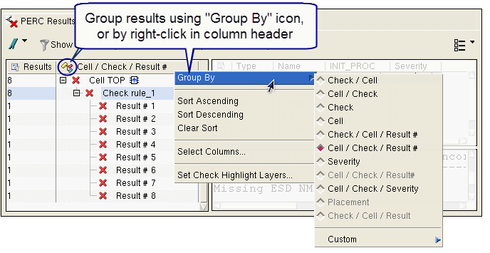

Grouping Results in Calibre RVE for PERC
You can group
results in the Tree View by cell name, check name, property value,
and other selections.
Prerequisites
A Calibre PERC results database open in Calibre RVE for PERC, as described in “Opening Calibre PERC Results in Calibre RVE”.
(Optional) If you want to group by database properties, the database should include properties. See “Example to Generate Calibre PERC Results with Database Properties”.
Procedure
- Choose View > Tree Options > Group By,
the Group By button (
 ), or right-click
in the column header to select the grouping method.
), or right-click
in the column header to select the grouping method. If you want to create a custom grouping, choose Custom and proceed to Step 2.
